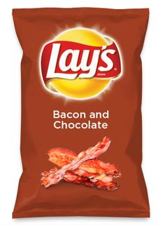

A taste of our work
Here we would like to show some of our top products that have kept the company thriving, and set an example for the kinds of creativity that has lead this company to where it is today.

Bacon and Chocolate chips
These were originaly a canned product that was passed around many of the large corperations and was conceptualized as "Chocolate and Bacon soup extract". However we saw the potential and re-imagined it as Bacon and Choclate chips.